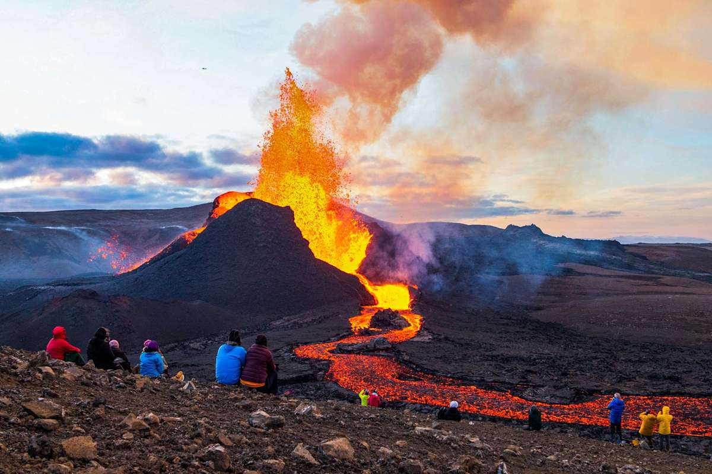
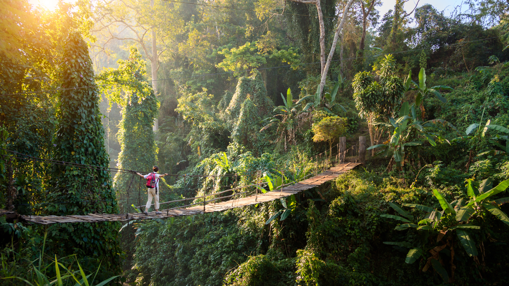

Activity Details

Volcano Tours
Explore Taniti's active volcano and moutainous interior. THis activity is ideal for visitors who want sightseeing, adventure, and scenic views.
Recommended for: Adventure travelers and families
Duration: Half-day tour
Book Volcano Tour
Rainforest Hiking
Walk through Taniti's tropical rainforest and experience the island's natural enviroment.
Recommened for: Nautre lovers and active travelers
Duration: 2-4 hours
Book Rainforest Hike
Snorkeling
Enjoy Taniti's ocean activities and explore the water near the island's beaches.
Recommended for: Couples, families, and beach visitors
Duration: 1-2 hours
Book SnorkelingBook an Activity
Select an activity above and continue planning your Taniti trip.